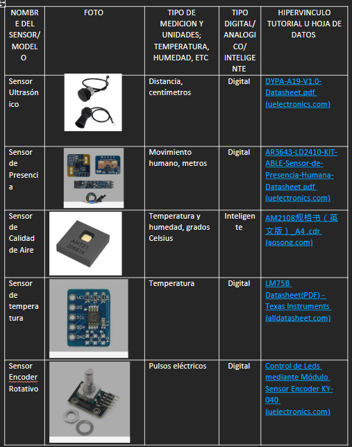
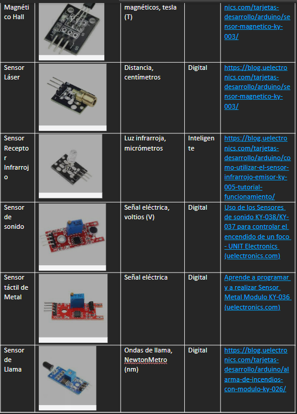
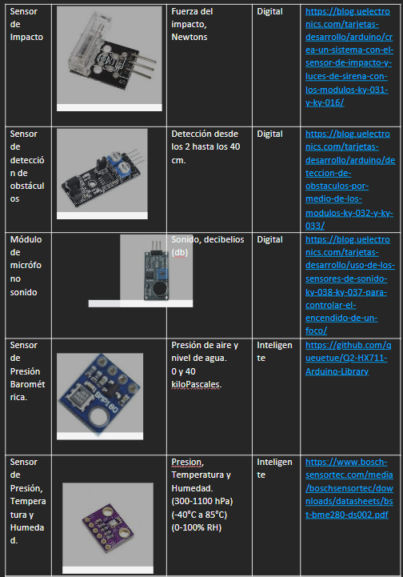

Portafolio de Actividades
Laboratorio de Elementos Programables I
Departamento de Ciencias e Ingenierías | Universidad Iberoamericana Puebla, México.
Sensores

- Resumen -
En esta práctica de laboratorio, se probaron 6 sensores diferentes para Arduino.
- Introducción -
Los sensores son dispositivos electrónicos que convierten una señal física, como la temperatura, la luz o el movimiento, en una señal eléctrica que puede ser interpretada por un microcontrolador. Los microcontroladores, como la placa Arduino, son dispositivos electrónicos programables que pueden utilizarse para controlar dispositivos externos, como motores, luces y pantallas.
- Materiales -
Placa Arduino UNO
Push Buttons
Cables Macho Macho
Pantalla OLED
Sensor Ultrasónico
Sensor de Temperatura
Sensor de Luz
Sensor de Ritmo Cardiaco
- Desarrollo -
El desarrollo de la práctica comenzó desde que realizamos una lista de 30 sensores diferentes para tener un mejor entendimiento de cada uno.
  
- Resultados -
A continuación se prensentan los resultados, videos de cómo sirve la pantalla OLED.
Reportes de Prácticas:
Sensor 1 - Botón Digital
Sensor 2 - Buzzer Digital
Sensor 3 - Laser
Sensor 4 - Sensor de Temperatura
Sensor 5 - Sensor Ultrasónico
Sensor 6 - Sensor de Ritmo Cardiaco
- Conclusiones -
En conclusión, los sensores son dispositivos imprescindibles en la electrónica. Pueden detectar y medir una amplia gama de fenómenos físicos, en diferentes entornos. Su versatilidad y aplicabilidad se traduce en mejoras en nuestras vidas, como la automatización de procesos, la creación de sistemas de alerta y la optimización de sistemas complejos. La evolución y diversificación de los sensores contribuye a la innovación tecnológica, permitiendo soluciones más eficientes y adaptadas a las necesidades cambiantes de la sociedad. La proliferación de sensores impulsa el avance hacia un mundo más conectado, inteligente y eficiente.
- Referencias -
TinkerCad | From mind to design in minutes. (s.f.-b). Tinkercad. https://www.tinkercad.com/classrooms/kKxYmpPDJXs/activities/8e6rkk3tuvu